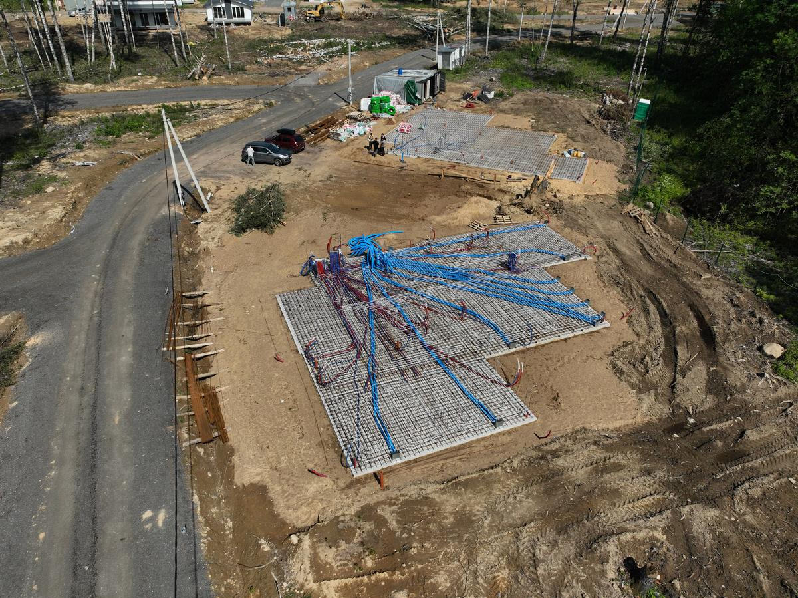
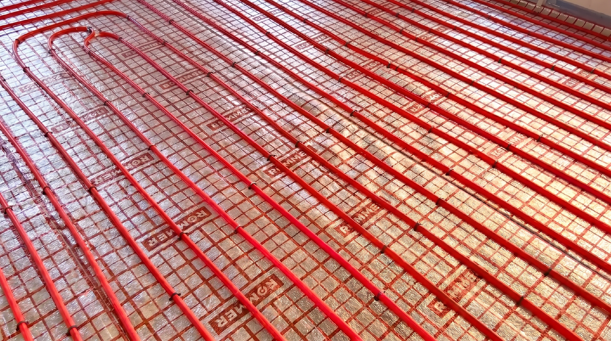
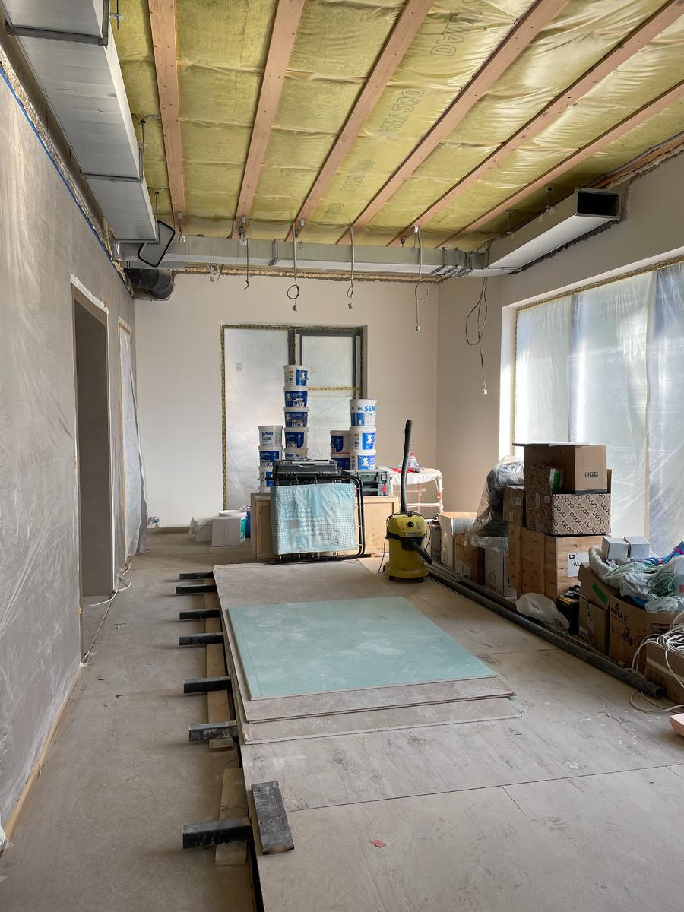
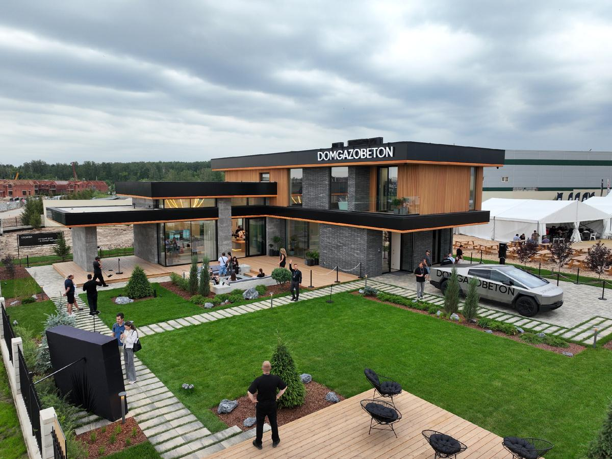

Почти каждый, кто начинает строить дом, думает: «Вот есть бюджет, в него и уложимся». На практике всё иначе — бюджет чаще всего растёт, потому что есть вещи, о которых на старте не вспоминают. Это не «жадность подрядчика» и не неожиданность: это просто статьи, которые не были учтены заранее. Ниже разбираем семь основных скрытых расходов — чтобы вы знали о них до того, как заключаете договор, а не после.
1. Особенности участка
Расход на сам участок все знают. А вот что у него могут быть «особенности» — нет.
- Сложный грунт → дороже фундамент.
- Перепады высот → дополнительные земляные работы и подпорные стены.
- Высокий уровень грунтовых вод → нужен дренаж.
Хорошее правило: до покупки участка заказать геологические изыскания. Стоят сравнительно недорого, но избавляют от сюрпризов на 500 тыс. рублей и больше уже на старте стройки.
2. Подведение коммуникаций
На практике — один из самых сложных и затратных этапов, который сильно влияет на итоговый бюджет.
Электричество обычно не входит в базовую стоимость дома. И само подключение — это не одна услуга, а несколько этапов: получение техусловий, подключение к сети, прокладка кабеля до дома, установка щита. Каждый этап оплачивается отдельно.
Водоснабжение. Если нет центральной воды — бурится скважина. Плюс к этому: насосное оборудование, фильтрация, ввод в дом.
Канализация и газ. Тоже не один платёж, а целый комплекс работ: проектирование, согласования, подключение, монтаж. Важно понимать это на старте, чтобы бюджет не вырос в процессе.

3. Инженерия дома
Отопление, вентиляция, водоснабжение, канализация, электрика — каждая система проектируется и монтируется отдельно. И внутри каждой из них есть десятки решений: оборудование, разводка, узлы, настройка.
На старте часто учитывают только базовые вещи. По факту добавляются:
- Котельная и её обвязка.
- Тёплые полы (там, где они нужны).
- Автоматика и «умный дом».
- Приточно-вытяжная вентиляция.

4. Отделка
Один из самых недооценённых этапов по бюджету. Сюда входит:
- Выравнивание стен.
- Покрытия — обои, краска, штукатурка.
- Плитка, керамогранит.
- Потолки.
- Двери, плинтуса, наличники.
- Сантехника, смесители, водорозетки.
Бюджет здесь сильно зависит от выбора материалов. Одинаковые по площади дома могут отличаться по стоимости отделки в разы.

5. Благоустройство участка
После строительства дома работы не заканчиваются — участок тоже требует вложений: дорожки, отмостка, забор, освещение, озеленение, террасы. Это не дополнение, а часть готового результата, без которого дом не ощущается завершённым. Этот этап часто не учитывают в начале, хотя он занимает значительную часть бюджета.

6. Изменения по ходу стройки
Почти на каждом объекте в процессе появляются идеи что-то поменять: добавить окно, увеличить террасу, изменить планировку, перенести розетки или свет. Каждое такое решение — это не «чуть-чуть переделать», а дополнительные работы, материалы, время и ресурсы.
Чем детальнее проект на старте, тем меньше изменений по ходу. Хороший проект — это не «подробный чертёж», а проработка всех решений до того, как они стали стройкой.
7. Ошибки и переделки
Если нет детальной проработки проекта или контроля на стройке — появляются ошибки. Иногда мелочи, иногда переделка уже выполненных работ. Переделка всегда дороже, чем сделать сразу правильно: вы платите за демонтаж, новые материалы и работу.
Поэтому грамотное проектирование и технический надзор — это не «дополнительные расходы», а способ сэкономить. На наших объектах техническая команда выезжает на каждый ключевой узел.
Чего нельзя делать при планировании бюджета
- Брать «среднюю по рынку» стоимость без оглядки на участок. Грунт, перепады, удалённость от сетей могут добавить миллионы.
- Считать стоимость только до коробки. Коробка — это около 50–60% бюджета. Дальше идут коммуникации, инженерия, отделка, благоустройство.
- Закладывать «по факту» без проекта. Без проработанного проекта изменений будет много, а каждая — это плюс к бюджету.
- Экономить на проектировании. Дешёвый проект чаще всего «отыгрывается» в стройке десятикратно — через ошибки, переделки и неучтённое.
Что DOMGAZOBETON делает на своих объектах
За 10 лет работы и 300 построенных домов мы выработали правило: на старте закладываем максимально реалистичный бюджет — не «минимальный», а тот, в который дом реально уложится. И если по ходу стройки появляются дополнительные расходы (например, всплыла особенность участка), мы предупреждаем заранее, а не «по факту». Это часть позиции «одна точка ответственности под ключ» — подробнее как мы строим, обсудить проект и смету.
Частые вопросы
Сколько стоит подключить электричество к участку?
Зависит от региона и удалённости от сети. Базовое подключение по льготному тарифу — символическое, но фактические затраты на техусловия, кабель и щит — десятки тысяч рублей и выше. Уточнять заранее в сетевой компании по конкретному адресу.
Что обычно «всплывает» по участку после покупки?
Чаще всего — сложный грунт (нужен усиленный фундамент), перепады высот (земляные работы и подпорные стены), высокий уровень грунтовых вод (дренаж). До покупки имеет смысл заказать геологические изыскания.
Сколько процентов бюджета уходит на отделку и благоустройство?
В среднем 30–40% от общего бюджета строительства уходит на отделку и благоустройство участка вместе. Это та часть, которую недооценивают чаще всего.
Как избежать роста бюджета по ходу стройки?
Главный рычаг — детальная проработка проекта на старте, чтобы по ходу не приходилось «доделывать на ходу». И прозрачная смета с указанием, что входит в стоимость, а что — отдельные позиции.
Источники
- ДОМ.РФ — рынок ИЖС: дом.рф.
- АНСБ — газобетон у подрядчиков ИЖС: ancb.ru/news/read/20874.